This page contains my notes from:
a) Guitar Theory for Dummies by Desi Serna (deleted)
b) Guitar All-in-One for Dummies by Mark Phillips and Jon Chappell
c) Move Forward Guitar Music Theory
d) Justin Guitar (deleted)
a) Guitar Theory for Dummies by Desi Serna (deleted)
b) Guitar All-in-One for Dummies by Mark Phillips and Jon Chappell
c) Move Forward Guitar Music Theory
d) Justin Guitar (deleted)
Index for Guitar All-in-One for Dummies:
Chapter 0_0: Guitar Chords
Chapter 0: Interesting links
Chapter 1: Guitar Anatomy and Tuning
Chapter 2: Developing basic playing skills
Chapter 3: Buying and Stringing Guitars
Chapter 4: Deciphering Music Notation and Tablature
Index for Move Forward Guitar Music Theory:
Module 0: Move Forward Guitar Music Theory. Original playlist here.
Guitar Chords
- Justin Guitar Chord Library.
Show Image 
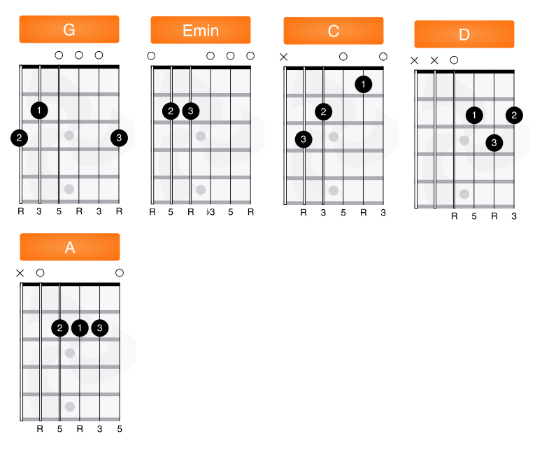
Interesting Links
- If you're asked to move a note or chord up the guitar neck or to play it higher on the neck, it means higher in pitch, or toward the body of the guitar. If you're asked to go
down or lower on the neck, it means toward the headstock, or lower in pitch.
- Strings are counted from the bottom. So if someone says play the second string, you play the second-thinnest string. The names of the open strings are (E, A, D, G, B, E, from 6th to 1st). An easy way to memorize the open strings in order is to remember the phrase "Eddie Ate Dynamite; Good-Bye, Eddie."
- Paul David's Music Theory playlist.
- Move Forward Guitar music theory playlist.
- What Musicians Can Learn About Practicing From Current Brain Research.
- Strings are counted from the bottom. So if someone says play the second string, you play the second-thinnest string. The names of the open strings are (E, A, D, G, B, E, from 6th to 1st). An easy way to memorize the open strings in order is to remember the phrase "Eddie Ate Dynamite; Good-Bye, Eddie."
- Paul David's Music Theory playlist.
- Move Forward Guitar music theory playlist.
- What Musicians Can Learn About Practicing From Current Brain Research.
Chapter 1: Guitar Anatomy and Tuning
Basics of a guitar
- Frets are the thin metal bars running perpendicular to the strings that shorten the effective vibrating length of a string, enabling it to produce different
pitches.
- Pickups (that are present only in electric guitars) are barlike magnets that create the electrical current, which the amplifier converts into musical sound. The vibrations caused when you pick a string disturb, or modulate, the magnetic field that the pickups - wire-wrapped magnets positioned underneath the strings - produce. As the vibrations of the strings modulate the pickup's magnetic field, the pickup produces a tiny electric current that exactly reflects that modulation.
- Any instrument must have some part of it moving in a regular, repeated motion to produce musical sound (a sustained tone, or pitch). In a guitar, this part is the vibrating string. If you tune a string of your guitar to different tensions, you get different tones. The greater the tension of a string, the higher the pitch.
- Instead of changing the tension in the string, there is another method, and that is to change the effective vibrating length of the string by fretting. This is the process of changing the vibrating length so that it is only the part of the string between the finger and the bridge that is vibrating. This is how you change the pitch. As you shorten the effective vibrating length, the pitch gets higher. This is also why violin has a higher pitch than say a guitar or a cello: shorter strings.
- Pickups (that are present only in electric guitars) are barlike magnets that create the electrical current, which the amplifier converts into musical sound. The vibrations caused when you pick a string disturb, or modulate, the magnetic field that the pickups - wire-wrapped magnets positioned underneath the strings - produce. As the vibrations of the strings modulate the pickup's magnetic field, the pickup produces a tiny electric current that exactly reflects that modulation.
- Any instrument must have some part of it moving in a regular, repeated motion to produce musical sound (a sustained tone, or pitch). In a guitar, this part is the vibrating string. If you tune a string of your guitar to different tensions, you get different tones. The greater the tension of a string, the higher the pitch.
- Instead of changing the tension in the string, there is another method, and that is to change the effective vibrating length of the string by fretting. This is the process of changing the vibrating length so that it is only the part of the string between the finger and the bridge that is vibrating. This is how you change the pitch. As you shorten the effective vibrating length, the pitch gets higher. This is also why violin has a higher pitch than say a guitar or a cello: shorter strings.
Show Image 
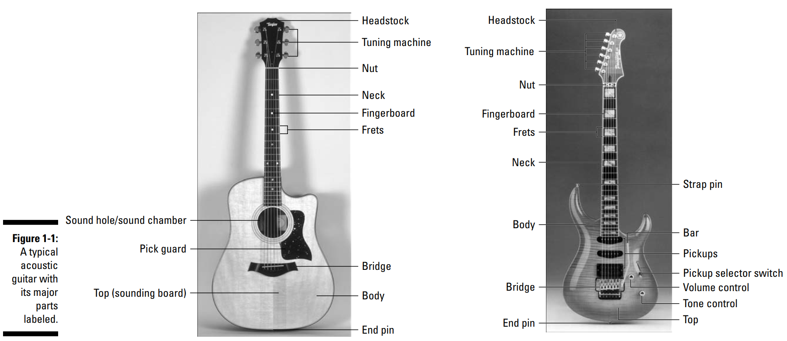
Intervals, frets, half steps, and tuning
- An interval is defined as the unit of musical difference in pitch.
- The smallest interval of the musical scale is the half step.
- On a guitar, frets represent the half steps. To go up or down by half steps on a guitar means to move your left hand one fret at a time, higher or lower on the neck.
- Electronic tuners made especially for guitars can usually sense what string you're playing, tell you what pitch you're nearest, and indicate whether you're flat (too low) or sharp (too high).
- // TODO: There is also relative tuning which does not need any outside reference to which you tune the instrument. As long as the strings are in tune in a certain relationship with each other, you can create sonorous and harmonious tones. To tune a guitar using the relative method, choose one string as the starting point - say, the 6th string. Leave the pitch of that string as is; then tune all the other strings relative to that 6th string.
- The smallest interval of the musical scale is the half step.
- On a guitar, frets represent the half steps. To go up or down by half steps on a guitar means to move your left hand one fret at a time, higher or lower on the neck.
- Electronic tuners made especially for guitars can usually sense what string you're playing, tell you what pitch you're nearest, and indicate whether you're flat (too low) or sharp (too high).
- // TODO: There is also relative tuning which does not need any outside reference to which you tune the instrument. As long as the strings are in tune in a certain relationship with each other, you can create sonorous and harmonious tones. To tune a guitar using the relative method, choose one string as the starting point - say, the 6th string. Leave the pitch of that string as is; then tune all the other strings relative to that 6th string.
Chapter 2: Developing Basic Playing Skills
Holding and playing the guitar
- Don't use the left hand to support the neck. You should be able to take your left hand completely off the fretboard without the guitar dipping toward the floor.
- To get an idea of correct left-hand positioning on the guitar, extend your left hand, palm up, and make a loose fist, placing your thumb roughly between your first and second fingers. All of your knuckles should be bent. Your hand should look about like that after you stick a guitar neck in there. The thumb glides along the back of the neck, straighter than if you were making a fist but not rigid. The finger knuckles stay bent whether they're fretting or relaxed.
- To fret a note, press the tip of your finger down on a string, keeping your knuckles bent. Try to get the fingertip to come down vertically on the string rather than at an angle. This position exerts the greatest pressure on the string and also prevents the sides of the finger from touching adjacent strings - which may cause either buzzing or muting (deadening the string, or preventing it from ringing). Use your thumb from its position underneath the neck to help "squeeze" the fingerboard for a tighter grip.
- When playing a particular fret, you don't place your finger directly on the metal fret, but in between the two frets. But not exactly in the middle of the two frets. Instead it should be as close to the higher fret as possible.
- Make sure as well that your left elbow doesn't stick out to the side. You want to keep your upper arm and forearm parallel to the side of your body. Relax your elbow so it stays at your side.
- Electric necks are both narrower (from the 1st string to the 6th) and shallower (from the fingerboard to the back of the neck) than acoustic necks. Electric guitars are, therefore, easier to fret. But the space between each string is smaller, so you're more likely to touch and deaden an adjacent string with your fretting finger. The biggest difference, however, between fretting on an electric and on a nylon or steel-string acoustic is the action.
- A guitar's action refers to how high above the frets the strings ride and, to a lesser extent, how easy they are to fret. Electric guitars are easier to fret which enables you to use a more relaxed left-hand position than you normally would on an acoustic.
- Your right hand, held loosely outstretched, crosses the strings at about a 60-degree angle. This position is good for playing with a pick. For fingerstyle playing, you want to turn your right hand more perpendicular to the strings. For classical guitar, you want to keep the right hand as close to a 90-degree angle as possible.
- When holding the pick, it should just be the tip that sticks out, perpendicular to the thumb.
- If you're strumming (playing rhythm), you strike the strings with the pick by using wrist and elbow motion. The more vigorous the strum, the more elbow you must put into the mix.
- Fingerpicking means that you play the guitar by plucking the strings with the individual right-hand fingers. The thumb plays the bass, or low, strings, and the fingers play the treble, or high, strings. In fingerpicking, you use the tips of the fingers to play the strings, positioning the hand over the sound hole (if you're playing acoustic) and keeping the wrist stationary but not rigid. Maintaining a slight arch in the wrist so the fingers come down more vertically on the strings also helps.
- To get an idea of correct left-hand positioning on the guitar, extend your left hand, palm up, and make a loose fist, placing your thumb roughly between your first and second fingers. All of your knuckles should be bent. Your hand should look about like that after you stick a guitar neck in there. The thumb glides along the back of the neck, straighter than if you were making a fist but not rigid. The finger knuckles stay bent whether they're fretting or relaxed.
- To fret a note, press the tip of your finger down on a string, keeping your knuckles bent. Try to get the fingertip to come down vertically on the string rather than at an angle. This position exerts the greatest pressure on the string and also prevents the sides of the finger from touching adjacent strings - which may cause either buzzing or muting (deadening the string, or preventing it from ringing). Use your thumb from its position underneath the neck to help "squeeze" the fingerboard for a tighter grip.
- When playing a particular fret, you don't place your finger directly on the metal fret, but in between the two frets. But not exactly in the middle of the two frets. Instead it should be as close to the higher fret as possible.
- Make sure as well that your left elbow doesn't stick out to the side. You want to keep your upper arm and forearm parallel to the side of your body. Relax your elbow so it stays at your side.
- Electric necks are both narrower (from the 1st string to the 6th) and shallower (from the fingerboard to the back of the neck) than acoustic necks. Electric guitars are, therefore, easier to fret. But the space between each string is smaller, so you're more likely to touch and deaden an adjacent string with your fretting finger. The biggest difference, however, between fretting on an electric and on a nylon or steel-string acoustic is the action.
- A guitar's action refers to how high above the frets the strings ride and, to a lesser extent, how easy they are to fret. Electric guitars are easier to fret which enables you to use a more relaxed left-hand position than you normally would on an acoustic.
- Your right hand, held loosely outstretched, crosses the strings at about a 60-degree angle. This position is good for playing with a pick. For fingerstyle playing, you want to turn your right hand more perpendicular to the strings. For classical guitar, you want to keep the right hand as close to a 90-degree angle as possible.
- When holding the pick, it should just be the tip that sticks out, perpendicular to the thumb.
- If you're strumming (playing rhythm), you strike the strings with the pick by using wrist and elbow motion. The more vigorous the strum, the more elbow you must put into the mix.
- Fingerpicking means that you play the guitar by plucking the strings with the individual right-hand fingers. The thumb plays the bass, or low, strings, and the fingers play the treble, or high, strings. In fingerpicking, you use the tips of the fingers to play the strings, positioning the hand over the sound hole (if you're playing acoustic) and keeping the wrist stationary but not rigid. Maintaining a slight arch in the wrist so the fingers come down more vertically on the strings also helps.
Show Image
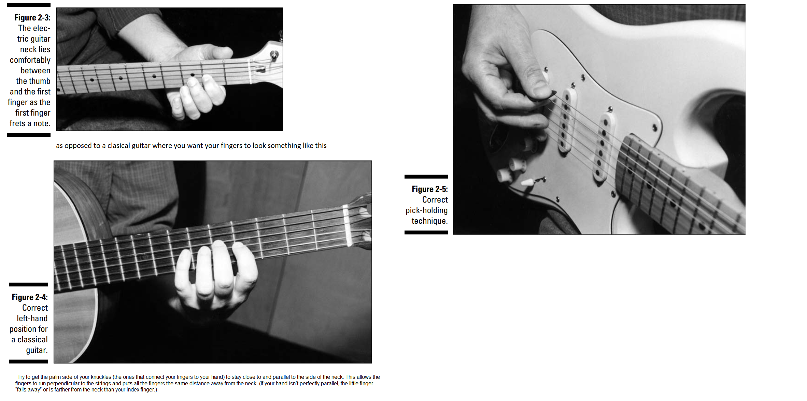
What is a note? What is a Chord?
- Each string on the guitar is associated with a note. A note can be described as the tuning of a particular string on the guitar. Or in other words, guitar notes are
individual pitches.
- For instance, in the standard tuning, the thickest string - the one that produces the lowest sound - is tuned to an E note. This is referred to as the low E string so as not to be confused with the other E string. Similarly, going from the thickest to the thinnest, we have the A string tuned to the A note, D string tuned to the D note, G string tuned to the G note, B string tuned to the B note, and finally the highest and the thinnest string tuned to the E note. This E note is two times higher than your low E string. Source.
- This is an image of all the notes on the fretboard (Source). The thickest E string is at the bottom of the image and the thinnest E string at the top. Note that some notes seem to have two names. You'll see that each one has a note with a sharp (#) and a note with a flat (b). This is because these notes are 'in between' notes that are identified with just one letter.
- For example, look at the note on the fifth fret of the A string-it's a D. Go two frets up to the seventh fret and you have an E. So what about the note in the middle on the sixth fret? How to read this note depends on the context and point of view. If you take the E note and lower it one fret, you have an Eb. At the same time, if you take the D note and raise it one fret you have a D#. Same note, same string, same location on the fretboard. The point is that both names mean the same note.
- A chord is defined as the simultaneous sounding of three or more notes. 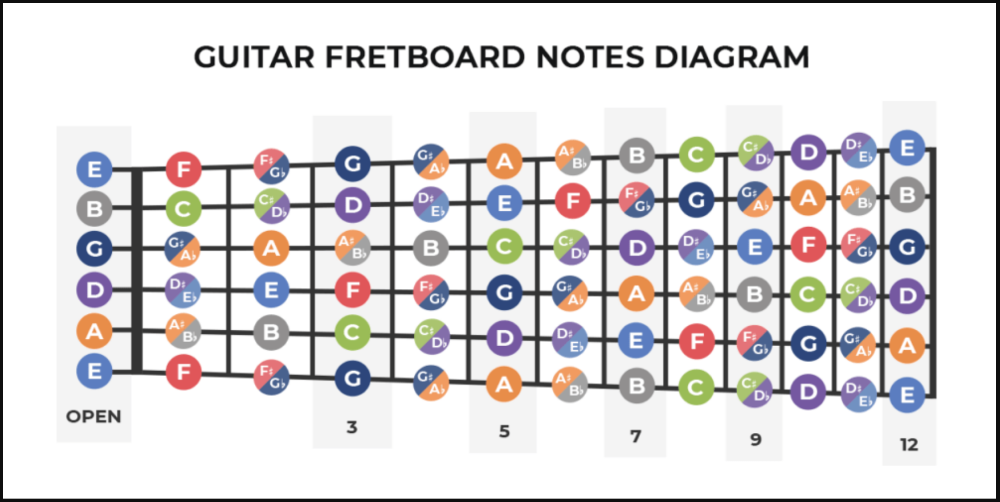
- For instance, in the standard tuning, the thickest string - the one that produces the lowest sound - is tuned to an E note. This is referred to as the low E string so as not to be confused with the other E string. Similarly, going from the thickest to the thinnest, we have the A string tuned to the A note, D string tuned to the D note, G string tuned to the G note, B string tuned to the B note, and finally the highest and the thinnest string tuned to the E note. This E note is two times higher than your low E string. Source.
- This is an image of all the notes on the fretboard (Source). The thickest E string is at the bottom of the image and the thinnest E string at the top. Note that some notes seem to have two names. You'll see that each one has a note with a sharp (#) and a note with a flat (b). This is because these notes are 'in between' notes that are identified with just one letter.
- For example, look at the note on the fifth fret of the A string-it's a D. Go two frets up to the seventh fret and you have an E. So what about the note in the middle on the sixth fret? How to read this note depends on the context and point of view. If you take the E note and lower it one fret, you have an Eb. At the same time, if you take the D note and raise it one fret you have a D#. Same note, same string, same location on the fretboard. The point is that both names mean the same note.
- A chord is defined as the simultaneous sounding of three or more notes. 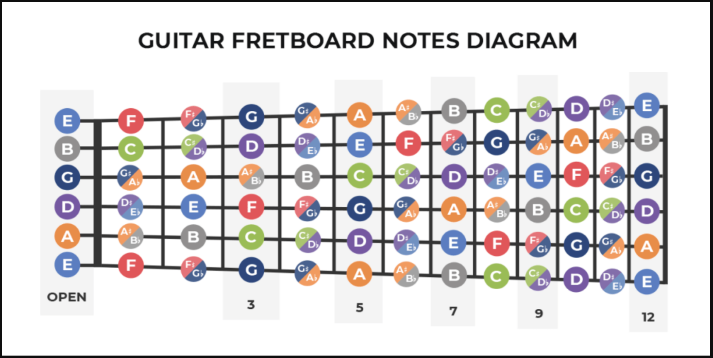
How to read a chord diagram?
- If a chord is to be played somewhere beyond the first four frets, a numeral appears to the right of the diagram, next to the top fret line, to indicate in which fret the
diagram actually starts. (In such cases, the top line is not the nut.) In most cases, however, you deal primarily with chords that fall within only the first four frets of
the guitar.
- Chords that fall within the first four frets typically use open strings, so they're referred to as open chords.
- Chords that fall within the first four frets typically use open strings, so they're referred to as open chords.
Show Image
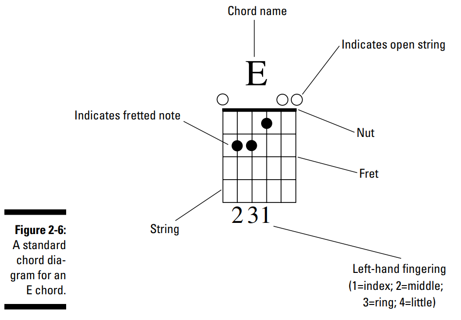
What is tablature?
- Tablature shows you how you play music over a period of time. Tab doesn't tell you what note to play (such as C or F# or Eb). It does, however, tell you what
string to fret and where exactly on the fingerboard to fret that string.
- Consider the diagram below. The top line of the tab represents the 1st string og the guitar - high E. The bottom line of the tab corresponds to the 6th string on the guitar, low E. A number appearing on any given line tells you to fret that string in that numbered fret. A 0 on a line means you play the open string.
- For example, when you see the number 3 on the 4th string from the top, you need to press down on the 3rd fret on the String 4.
- YT tutorial by Justin goes into how to read tablature.
- Consider the diagram below. The top line of the tab represents the 1st string og the guitar - high E. The bottom line of the tab corresponds to the 6th string on the guitar, low E. A number appearing on any given line tells you to fret that string in that numbered fret. A 0 on a line means you play the open string.
- For example, when you see the number 3 on the 4th string from the top, you need to press down on the 3rd fret on the String 4.
- YT tutorial by Justin goes into how to read tablature.
Show Image
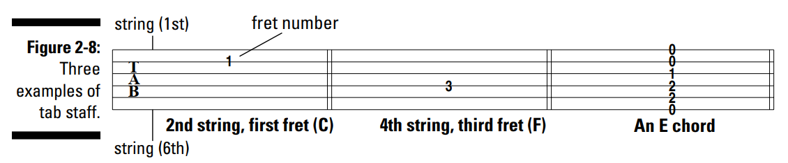
How to play a chord?
- Buzzing results if you're not pressing down quite hard enough when you fret. A buzz can also result if a fretting finger accidentally comes in contact with an adjacent
string, preventing that string from ringing freely. Without removing your fingers from the frets, try "rocking and rolling" your fingers around on their tips to eliminate any
buzzes when you strum the chord.
Chapter 3: Buying and Stringing Guitars
Basics of a guitar
- Goes over what factors to consider when buying a new guitar.
- Also goes over how to restring your guitar.
- Also goes over how to restring your guitar.
Chapter 4: Deciphering Music Notation and Tablature
Basics of a guitar
- YT tutorial by Sungmin Lee on how to read sheet music for guitar.
- Playlist from Khan Academy explaining notes.
- The below diagram shows all the concepts in one place.
- The below diagram shows the entire range of notes (including sharps and flats) on the guitar on the treble clef using ledger lines above and below the staff. All 12
frets of each of the six strings are shown on the staff, which allows you to see how to play some pitches on multiple strings. The lowest possible note is the open low-E
string, three ledger lines and a space below the treble staff. The highest note is E, three ledger lines above the staff.
- Playlist from Khan Academy explaining notes.
- The below diagram shows all the concepts in one place.
Show Image
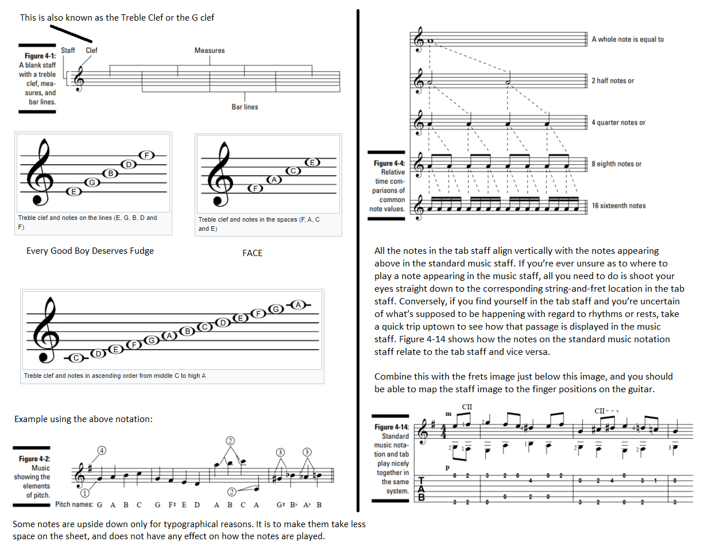
Show Image
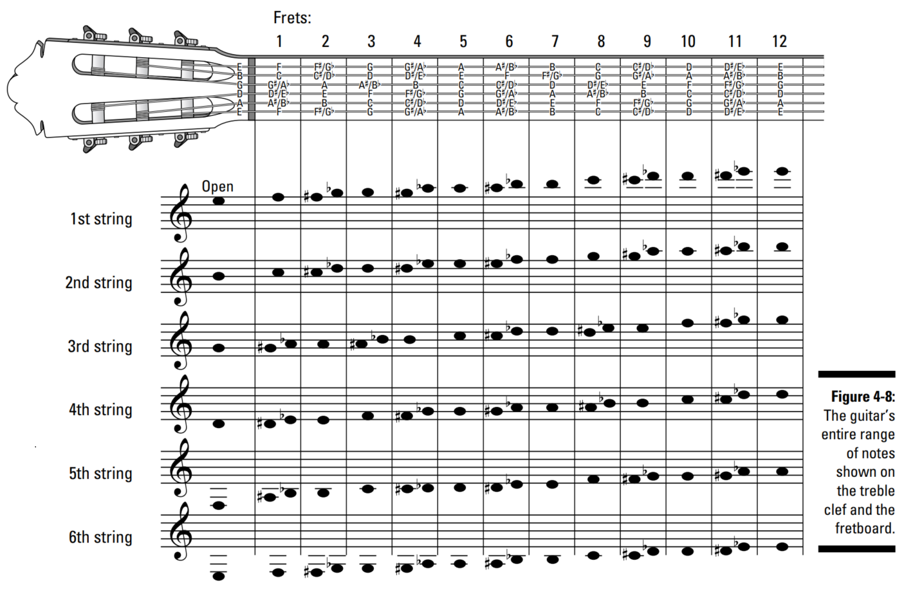
Notes from Move Forward Guitar Music Theory: Original playlist here.
Chapter 1: Intervals
Chapter 2: Octaves and Unison Notes
Chapter 3: Musical Alphabet & Chromatic Scale
Chapter 4: Chords
Chapter 1: Intervals
Chapter 2: Octaves and Unison Notes
Chapter 3: Musical Alphabet & Chromatic Scale
Chapter 4: Chords
Interesting Links
- JustinGuitar: Strumming Machine is a free site tool that allows you to create and play strumming
patterns.
- JustinGuitar: Chord Library is a free site tool with videos and diagrams on how to play guitar chords.
- Guitar theory for dummies online video repo.
- If you're not sure where to find the music for a given song referenced in the text, check out musicnotes.com, sheetmusicplus.com, or halleonard.com/.
- If you still need to learn the basics and acquire the skills I list here, I suggest you start with Guitar For Dummies, by Mark Phillips and Jon Chappell (Wiley).
- JustinGuitar: Chord Library is a free site tool with videos and diagrams on how to play guitar chords.
- Guitar theory for dummies online video repo.
- If you're not sure where to find the music for a given song referenced in the text, check out musicnotes.com, sheetmusicplus.com, or halleonard.com/.
- If you still need to learn the basics and acquire the skills I list here, I suggest you start with Guitar For Dummies, by Mark Phillips and Jon Chappell (Wiley).
Chapter 1: Intervals
Names of intervals
- Link to lesson.
- An interval is the distance between two notes. All intervals have a name.
- For understanding intervals, we need to understand what half-steps and whole steps are (also known as whole tones or semi-tones).
- A half-step is the distance between two notes that are one fret apart (semi-tone). A whole step is two frets apart (whole tone).
- In the table below we look at the names of different intervals. These intervals are used to build scales.
-

- An interval is the distance between two notes. All intervals have a name.
- For understanding intervals, we need to understand what half-steps and whole steps are (also known as whole tones or semi-tones).
- A half-step is the distance between two notes that are one fret apart (semi-tone). A whole step is two frets apart (whole tone).
Show Image
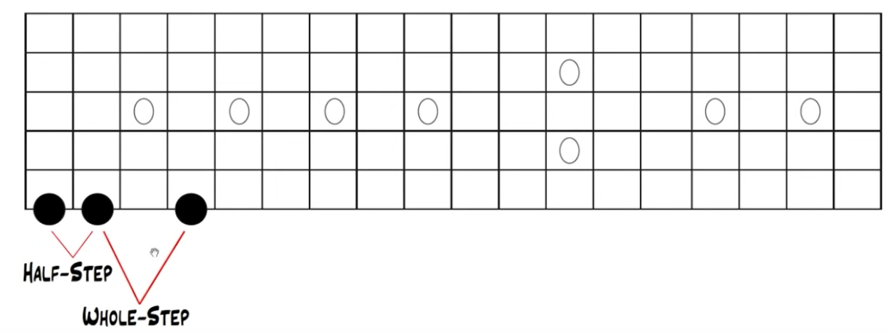
| Notes are these many steps apart | Name of the note |
|---|---|
| Half Step | Minor 2nd (also called ♭2 which is pronounced as "flat 2") |
| Whole Step | Major 2nd (also called 2 which is pronounced as "two") |
| Step and a half | Minor 3rd (also called ♭3 which is pronounced as "flat 3") |
| 2 whole steps | Major 3rd (also called 3 which is pronounced as "three") |
| 2 and a half steps | Perfect 4th (also called 4 which is pronounced as "four") |
| 3 whole steps | Diminished 5th (also called "tritone", or ♭5 which is pronounced as "flat 5") |
| 3 and a half steps | Perfect 5th (also called 5 which is pronounced as "five") |
| 4 whole steps | Augmented 5th (also called ♯5 which is pronounced as "sharp 5") or Minor 6th (also called ♭6 which is pronounced as "flat 6") |
| 4 and a half steps | Major 6th (also called 6 which is pronounced as "six") or Diminished 7th (also called ♭♭7 which is pronounced as "double flat 7") |
| 5 whole steps | Minor 7th(also called ♭7 which is pronounced as "flat 7") |
| 5 and a half steps | Major 7th(also called 7 which is pronounced as "seven") |
| 6 whole steps | Octave (also called 8 which is pronounced as "eight"). You're essentially doubling the frequency of the original note that you started with. If you went a fret higher than this, you would circle back to flat 2, just an octave apart. |
Below is the frequency chart for all the notes on a guitar
. Source.
Show Image
Intervals of open strings in standard tuning
- Link to lesson.
- We looked at the names of the intervals as we moved up the neck of the guitar in the previous section. Now we will map that to the intervals between two strings. Note that for the sake of this comparison, we are talking about when the guitar is using the standard tuning.
- The interval between E and A is a perfect 4th. From the table above, we know that a perfect 4th means an interval of 2 and a half steps. So what this would mean is that picking the open E string and then picking the open A string would cause the same frequency difference if we were picking the open E string and then picked the 5th fret of the E string (?).
-
- We looked at the names of the intervals as we moved up the neck of the guitar in the previous section. Now we will map that to the intervals between two strings. Note that for the sake of this comparison, we are talking about when the guitar is using the standard tuning.
- The interval between E and A is a perfect 4th. From the table above, we know that a perfect 4th means an interval of 2 and a half steps. So what this would mean is that picking the open E string and then picking the open A string would cause the same frequency difference if we were picking the open E string and then picked the 5th fret of the E string (?).
-
The figure below shows that the interval between all the strings, except the B and G, is a Perfect 4th (2 and a half steps). Between the B and G string, the interval is a Major 3rd (2 whole steps).
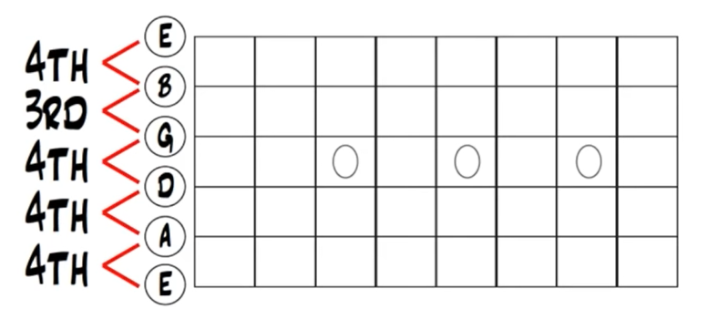 - Why does this matter?Interval shapes
- Link to lesson.
- The below image shows how to translate intervals on the same string to intervals on different strings. This is using the same logic that we looked above, ie. the interval between the E and A string is a Perfect 4th.
- Note the augmented 5th and onwards pictures. Had we kept moving up the 5th string, the finger positioning would have become more difficult due to the long stretch. Hence, we have instead moved to the 4th string to make it easier. The difference is still the same, as in, we are still at the interval of 4 whole steps.
- The below image shows how to move one sample interval through all the string sets. We are going to take a Major 3rd interval (since it seems to be something that is used
quite commonly in chords). We are not worried about the notes that are being played right now. We just want to see the interval shapes and how they change as we move across
strings.
- Image 4 should make sense by now. We are on the 5th fret of the 3rd string. The interval between the 3rd and 2nd string is 2 whole steps. Hence, it changes the finger placement.
- Why do we move from 5th fret on the 2nd string and 4th fret on the 1st string, to what is shown in the image 6? IDK.
- The below image shows how to translate intervals on the same string to intervals on different strings. This is using the same logic that we looked above, ie. the interval between the E and A string is a Perfect 4th.
- Note the augmented 5th and onwards pictures. Had we kept moving up the 5th string, the finger positioning would have become more difficult due to the long stretch. Hence, we have instead moved to the 4th string to make it easier. The difference is still the same, as in, we are still at the interval of 4 whole steps.
Show Image
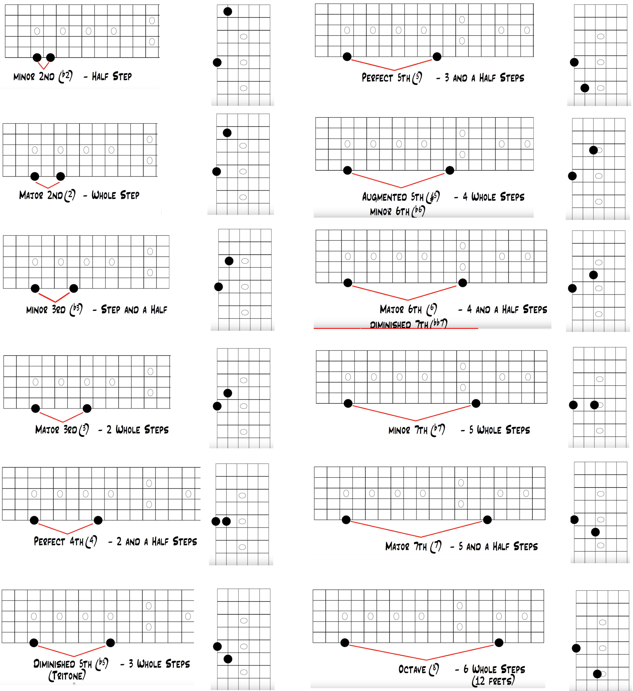
- Image 4 should make sense by now. We are on the 5th fret of the 3rd string. The interval between the 3rd and 2nd string is 2 whole steps. Hence, it changes the finger placement.
- Why do we move from 5th fret on the 2nd string and 4th fret on the 1st string, to what is shown in the image 6? IDK.
Show Image
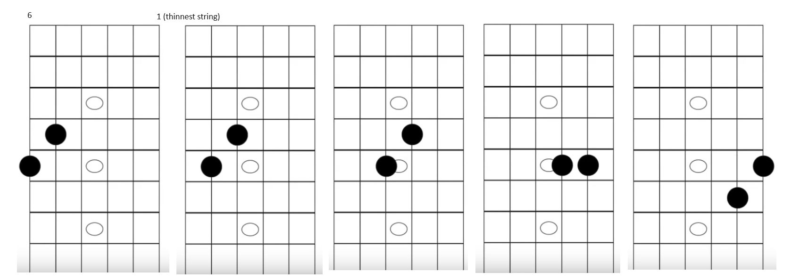
Chapter 2: Octaves and Unison Notes
Octaves
- Link to lesson.
- We know from the previous lessons that an octave is an interval of 8. It is 6 whole steps, or 12 steps apart. An octave is the same note, but higher in pitch.
- In this lesson we are going to see how to find one note up and down the whole fret board.
- The below image shows how octave shapes change as we move across strings. Octave shape 3 is different because of reasons we have already discussed.
- Octave shape 5 and Octave shape 6 are a bit different from the above. Instead of going down towards the floor, we are now instead going up. Hence, the note on the 2nd string actually becomes the higher note now.
- Octave 6 is a two octave shape, as in the two notes are two octaves apart. Remember from the way that the guitar is tuned that the 1st and the 6th strings are both E. So any notes that you fret on the two strings are going to be the same note, just two octaves apart.
- So how do we use these shapes to find one note up and down the whole fretboard?
- Consider the lowest possible note on the highest string: the F note. The note is not important right now. Refer the image above to see how the below image works. Since the note is on the thinnest string, string 1, we will use the Octave Shape 5, which gives us the next octave on String 6. Now we are on String 6, hence we will use the Octave Shape 1, which gives us the next octave on String 3. And so it goes.
- Finally we reach the Octave shape 6 again on the thinnest string on fret 13, which is the same string from which we started, and at that point the cycle will repeat. These two notes are one octave apart.
- So in the below example what we have essentially done is that we have found out all of the F notes on the entire fretboard. You can do the same thing with any note. You can start with a different note, and then using the same concept, find that all the other places on the fretboard that you can play that note. Pretty cool.
- We know from the previous lessons that an octave is an interval of 8. It is 6 whole steps, or 12 steps apart. An octave is the same note, but higher in pitch.
- In this lesson we are going to see how to find one note up and down the whole fret board.
- The below image shows how octave shapes change as we move across strings. Octave shape 3 is different because of reasons we have already discussed.
- Octave shape 5 and Octave shape 6 are a bit different from the above. Instead of going down towards the floor, we are now instead going up. Hence, the note on the 2nd string actually becomes the higher note now.
- Octave 6 is a two octave shape, as in the two notes are two octaves apart. Remember from the way that the guitar is tuned that the 1st and the 6th strings are both E. So any notes that you fret on the two strings are going to be the same note, just two octaves apart.
Show Image
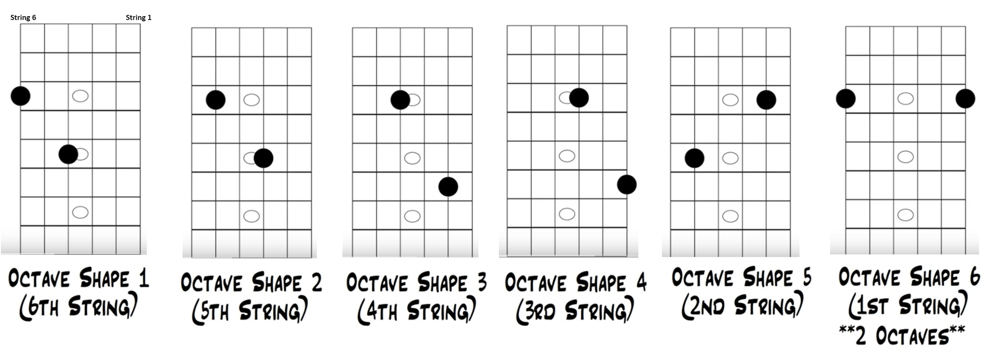
- Consider the lowest possible note on the highest string: the F note. The note is not important right now. Refer the image above to see how the below image works. Since the note is on the thinnest string, string 1, we will use the Octave Shape 5, which gives us the next octave on String 6. Now we are on String 6, hence we will use the Octave Shape 1, which gives us the next octave on String 3. And so it goes.
- Finally we reach the Octave shape 6 again on the thinnest string on fret 13, which is the same string from which we started, and at that point the cycle will repeat. These two notes are one octave apart.
- So in the below example what we have essentially done is that we have found out all of the F notes on the entire fretboard. You can do the same thing with any note. You can start with a different note, and then using the same concept, find that all the other places on the fretboard that you can play that note. Pretty cool.
Show Image
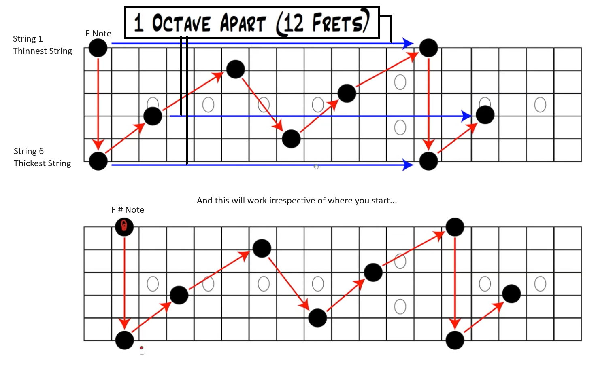
Unison Notes
- Link to lesson.
- Octave notes have different pitches. Unison notes have the same pitches.
- Unlike an interval, you can't show a unison note on the same string. Ie. if you have a note of one specific pitch on one string, there cannot be another note of the same pitch on the same string. Unison notes can only be on two separate strings.
- In the previous lesson we took a look at notes that are different octaves apart.
- These are the unison notes. If you play these unison notes on the guitar, they might sound like different pitches, and they might be a different pitch, but that's because most guitars are not perfectly intonated, and also the string gauge can make a difference in the way that they sound. But technically they are the same pitch.
- In order to find the unison note for any particular note, you are going to go down towards the floor from where you are starting by 1 string, and then move up towards the head of the guitar by 5 frets. These two notes will be the exact same pitch/frequency.
- Unison shape 4 needs to be shifted up by 1 fret because of the same reason that the Octave shape was shifter up, ie, the difference between the 3rd and 2nd string is Major 3rd, and not Perfect 4th.
- Using this we can find all the unison notes on the fretboard. Here are all the unison notes for the F note for example.
- So using this diagram, you can now find where all the F notes lie on your fretboard, and from them, which are the unison notes, and which of them are the octave notes.
- Again, this will carry over to any note that you want. The spacing would remain the same.
-
- Octave notes have different pitches. Unison notes have the same pitches.
- Unlike an interval, you can't show a unison note on the same string. Ie. if you have a note of one specific pitch on one string, there cannot be another note of the same pitch on the same string. Unison notes can only be on two separate strings.
- In the previous lesson we took a look at notes that are different octaves apart.
- These are the unison notes. If you play these unison notes on the guitar, they might sound like different pitches, and they might be a different pitch, but that's because most guitars are not perfectly intonated, and also the string gauge can make a difference in the way that they sound. But technically they are the same pitch.
- In order to find the unison note for any particular note, you are going to go down towards the floor from where you are starting by 1 string, and then move up towards the head of the guitar by 5 frets. These two notes will be the exact same pitch/frequency.
- Unison shape 4 needs to be shifted up by 1 fret because of the same reason that the Octave shape was shifter up, ie, the difference between the 3rd and 2nd string is Major 3rd, and not Perfect 4th.
Show Image
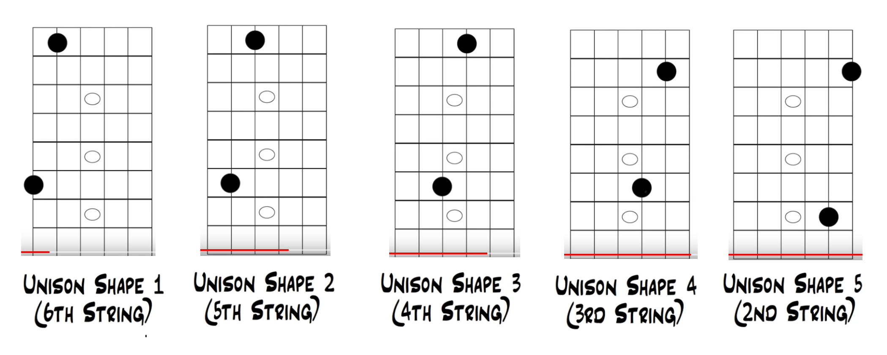
Red arrows are all the octave notes. Blue arrows are all the unison notes.
If you follow along the blue arrows, the notes are exactly the same notes in pitch. So as you move diagonally from the 1st string 1st fret, to the 2nd string 6th fret, 3rd string 10th fret and so on, the notes are the exact same in pitch. Similarly, for the other blue line, the note on the 4th string 3rd fret, is the same as the note on the 5th string 8th fret and so on.- So using this diagram, you can now find where all the F notes lie on your fretboard, and from them, which are the unison notes, and which of them are the octave notes.
- Again, this will carry over to any note that you want. The spacing would remain the same.
Show Image
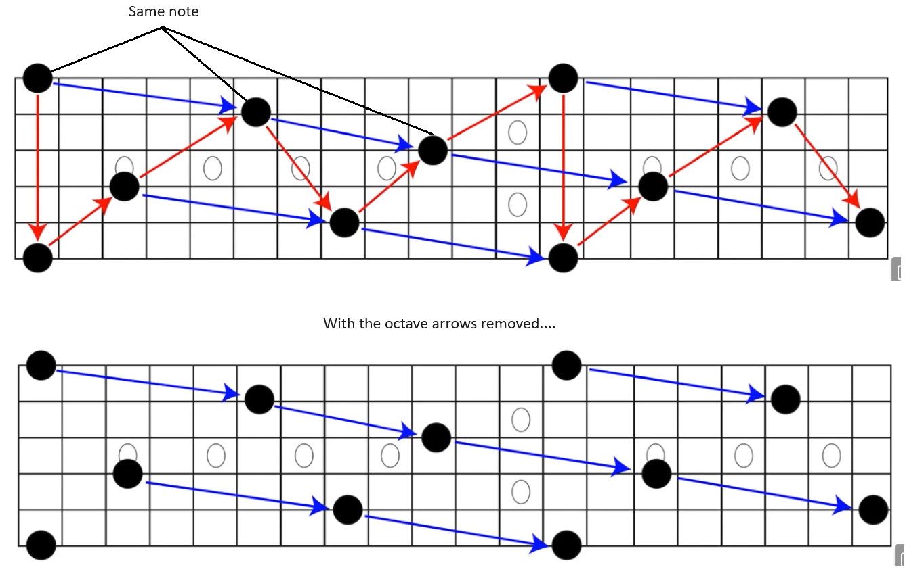
Here is a frequency diagram showing all the above concepts
. The numbers are the frequency of each of the notes. You can see that the octaves notes are doubled/halved, and the unison notes are at the same frequency. The leftmost values are the open string frequencies. 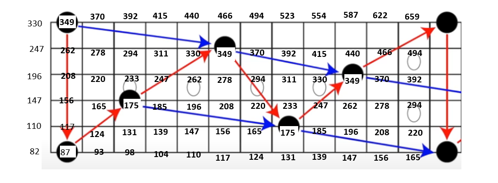Chapter 3: Musical Alphabet & Chromatic Scale
Musical Alphabet & Chromatic Scale
- Link to lesson.
- The musical alphabet goes from A to G. As you can see in the below image, there are some notes missing. This is because even though the notes go from A to G, there are sharps and flats in between the notes.
- Between A and B, you have the A♯ (pronounce A sharp) or B♭ (pronounced B flat). The note can be called either one of those because if you raise A half a step you would get A♯, but if you lower B half a step you would get B♭.
- The musical alphabet goes from A to G. As you can see in the below image, there are some notes missing. This is because even though the notes go from A to G, there are sharps and flats in between the notes.
- Between A and B, you have the A♯ (pronounce A sharp) or B♭ (pronounced B flat). The note can be called either one of those because if you raise A half a step you would get A♯, but if you lower B half a step you would get B♭.
Show Image
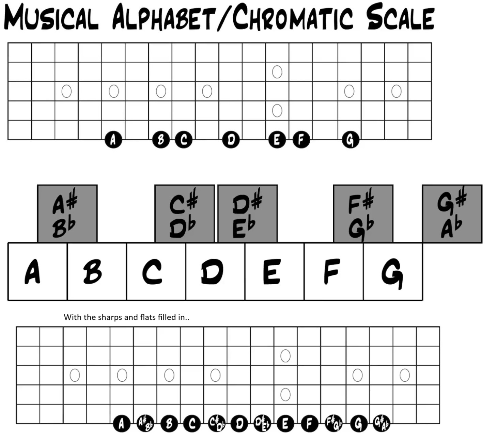
The Major Scale
- Link to lesson.
- Any scale is just a series of notes taken from the musical alphabet and put into some sort of order with intervals, and most scales, but not all, contain a combination of whole and half steps put together.
- To understand a scale, we first need to understand what a "root node" is. If you're starting a scale, then your root node would be the start of the scale. For example, if we were talking about a C major scale, then the root node would be C. Because that's the start of the scale, and that's the end of the scale. From C to C.
- So for example, the C Major scale would look like the below image. We are doing the scale on the 5th string, but we could do it on any string. As long as the note starts from C and ends at C, it would be called the C Major scale. And because of the same reason, the root node would be C.
-
- You can do this starting on any note, and the name of the note that you start on becomes the name of the note. For example, if we started on G, we would get the G Major
scale. The order of the intervals stays the exact same, the order of the steps stays the exact same, we just start with a different note.

- Any scale is just a series of notes taken from the musical alphabet and put into some sort of order with intervals, and most scales, but not all, contain a combination of whole and half steps put together.
- To understand a scale, we first need to understand what a "root node" is. If you're starting a scale, then your root node would be the start of the scale. For example, if we were talking about a C major scale, then the root node would be C. Because that's the start of the scale, and that's the end of the scale. From C to C.
- So for example, the C Major scale would look like the below image. We are doing the scale on the 5th string, but we could do it on any string. As long as the note starts from C and ends at C, it would be called the C Major scale. And because of the same reason, the root node would be C.
-
In order to create the Major scale, we would start at the root node, then we would go whole step, whole step, half step, whole step, whole step, whole step, half step.
Show Image
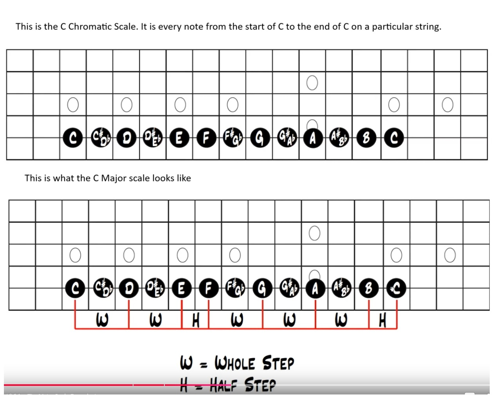
Show Image
Major Scale Intervals
- Link to lesson.
- Instead of looking at the major scale as notes, you can see it as intervals. This is what the C Major scale would look like if we used intervals instead. The R signifies the root node that we talked about above.
- Instead of looking at the major scale as notes, you can see it as intervals. This is what the C Major scale would look like if we used intervals instead. The R signifies the root node that we talked about above.
Show Image
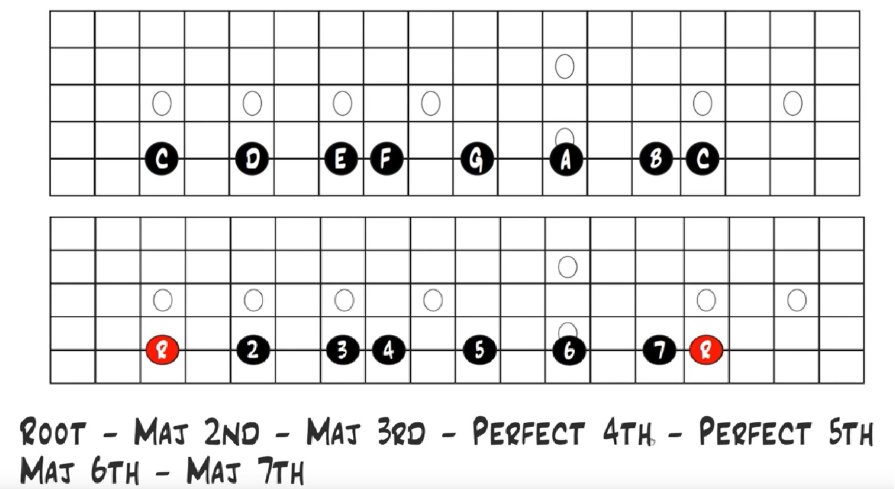
Major Scale Patterns
- Link to lesson.
- We take a look at the F Major Scale and see it all over the fret board.
- As you can see what we've done is take a portion of the whole scale up the whole neck and just broken it out into 7 different patterns. Each of the patterns starts at the root interval right up to the 7th interval. Also note that there is an overlap on the notes to play among the different patterns. 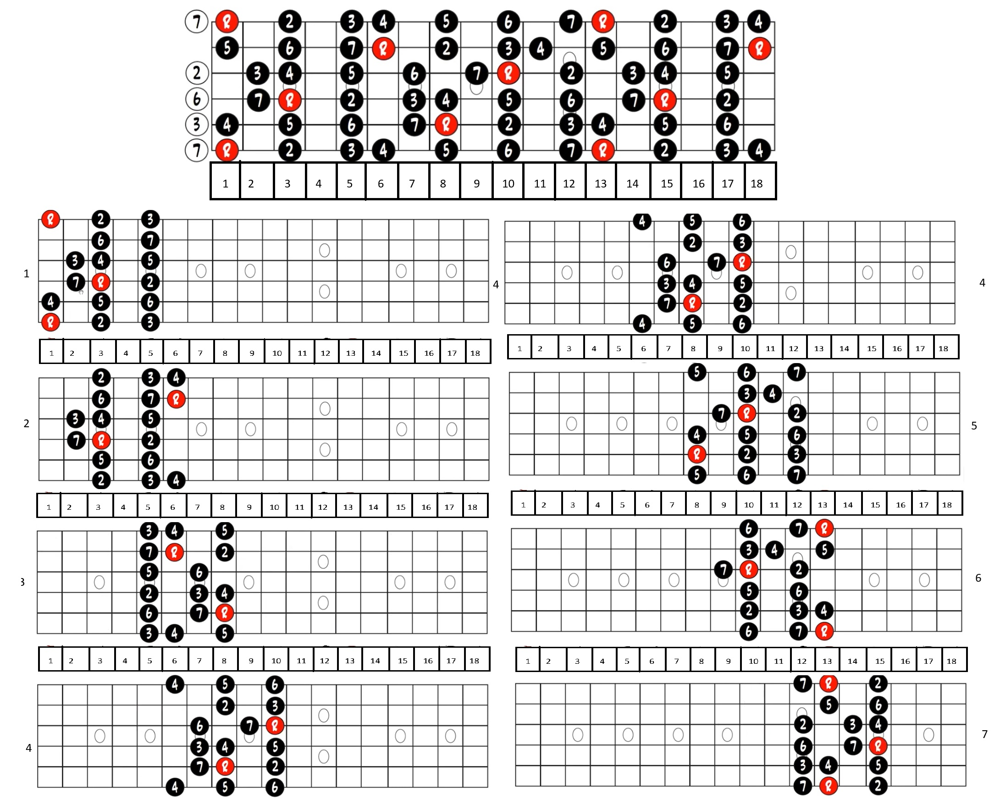
- We take a look at the F Major Scale and see it all over the fret board.
You need to memorise where all these notes are
. And the way of doing this is to break apart this scale (or any major scale) into patterns. And those patterns you use are going to be the same for every major scale. It's just that they will be on a different spot on the neck depending on where your root node is.- As you can see what we've done is take a portion of the whole scale up the whole neck and just broken it out into 7 different patterns. Each of the patterns starts at the root interval right up to the 7th interval. Also note that there is an overlap on the notes to play among the different patterns. 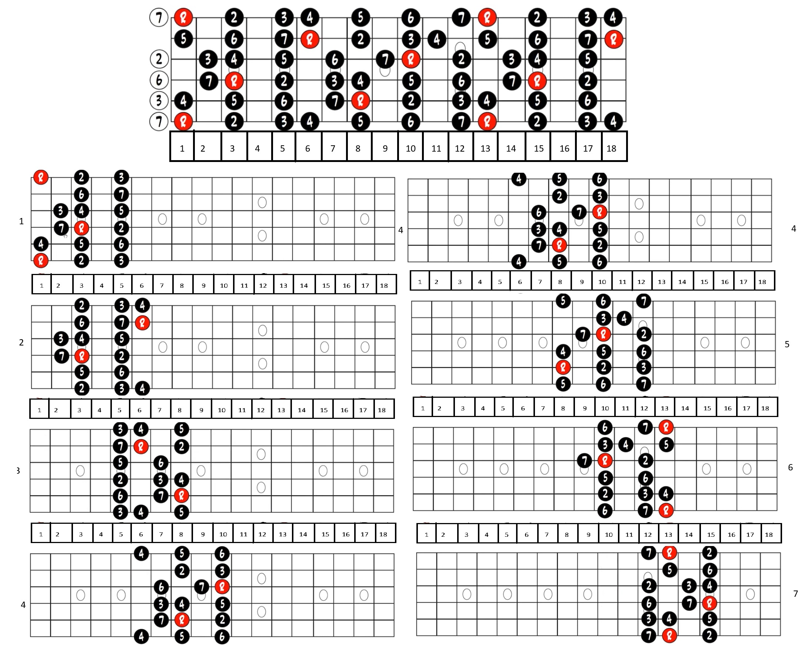
Major Scale: Upper Intervals
- Link to lesson.
- In the above diagram for the F Major scale, on string 6 we start from fret 1 and then go all the way to fret 13 and hit the root node again. Then we marked the next frets as intervals 2, 3, 4. But these are 2, 3, 4 with respect to the second root node. Another way of seeing the higher intervals would be to calculate from the first root node itself, making them intervals 9, 10, and 11.
- The same logic can be extended to the patterns that we looked at above. We are specifically going to focus on the intervals 9, 11, and 13. We are not going to worry about any upper intervals past that. Reason for this is that the intervals 9, 11, 13 are the intervals that are used in making chords.
- The thing to keep in mind is
- So if we replace all the 2, 4, 6, we get the following structure:
- In the above diagram for the F Major scale, on string 6 we start from fret 1 and then go all the way to fret 13 and hit the root node again. Then we marked the next frets as intervals 2, 3, 4. But these are 2, 3, 4 with respect to the second root node. Another way of seeing the higher intervals would be to calculate from the first root node itself, making them intervals 9, 10, and 11.
- The same logic can be extended to the patterns that we looked at above. We are specifically going to focus on the intervals 9, 11, and 13. We are not going to worry about any upper intervals past that. Reason for this is that the intervals 9, 11, 13 are the intervals that are used in making chords.
- The thing to keep in mind is
9 is the same as a 2, 11 is the same as a 4 and 13 is the same as a 6
. You will see people use both of them.- So if we replace all the 2, 4, 6, we get the following structure:
Show Image
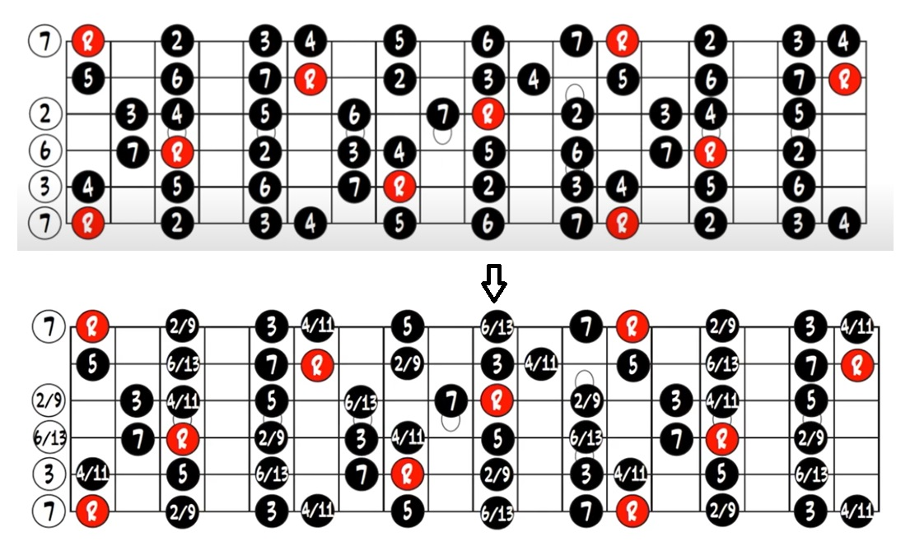
Major Scale – Patterns vs Positions
- Link to lesson.
- We will clarify the difference between a scale pattern and a scale position. The terms can be used interchangeably, which can be confusing. A pattern is just a shape that is going to be the same no matter which key you are in. You are just going to be at a different spot on the fretboard. A position actually refers to where you are on the fretboard, more specifically where your first finger lands on the fretboard. What does this mean?
- A pattern is a shape that can be moved, and those shapes stay the same no matter what key you are in, or what your root node is. A position will change depending on where your first finger lands on the fretboard.
- We will clarify the difference between a scale pattern and a scale position. The terms can be used interchangeably, which can be confusing. A pattern is just a shape that is going to be the same no matter which key you are in. You are just going to be at a different spot on the fretboard. A position actually refers to where you are on the fretboard, more specifically where your first finger lands on the fretboard. What does this mean?
- A pattern is a shape that can be moved, and those shapes stay the same no matter what key you are in, or what your root node is. A position will change depending on where your first finger lands on the fretboard.
Show Image
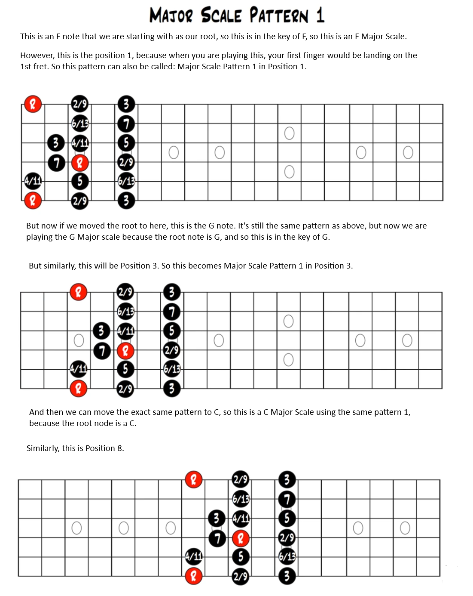
Major Scale – Fretboard Insight
- Link to lesson.
- Recall from Unison Notes that there are multiple places on the guitar where you can play the same notes. Since the same note can be played at different positions, this means that the patterns we discussed in section on major scale patterns, some of the notes can be replaced by their unison notes. So you can come up with your own scale patterns that are pretty difficult to play considering the finger positions that you might have to switch between.
- Recall from Unison Notes that there are multiple places on the guitar where you can play the same notes. Since the same note can be played at different positions, this means that the patterns we discussed in section on major scale patterns, some of the notes can be replaced by their unison notes. So you can come up with your own scale patterns that are pretty difficult to play considering the finger positions that you might have to switch between.
Major Scale – Keys
- Link to lesson.
- The first image is the F Major scale because all the roots are the F notes, and the root is the name of the scale. Recall that in order to build a scale, we start at the root and then use the formula (Whole Step) WS - WS - HS - WS - WS - WS - HS. What this means is that all the notes on this fretboard are
- This stuff is important because whenever you start to learn a song, the first thing they will say is that this is in the key of whatever. And the way that it's in a specific key is because those chords that you're playing can only come from one key. For example, if you were to play the chords C-G-D together, those chords together could only be in the key of G. You could only get those chords out of the notes that are in the key of G. Another example, if you were to play chord C-G-Aminor-F, those chords together could only come out of the key of C.
- But do note that it is not necessary that all songs are just in a single key, often songs will change keys, or even borrow chords from other keys. But having an understanding of keys will help you write songs of your own because you will know which chords will go together and sound good, at least theoretically.
- The first image is the F Major scale because all the roots are the F notes, and the root is the name of the scale. Recall that in order to build a scale, we start at the root and then use the formula (Whole Step) WS - WS - HS - WS - WS - WS - HS. What this means is that all the notes on this fretboard are
in the key of F
. Similarly, with the second image, we are shifting all the root nodes to G, and hence the fretboard isin the key of G
. All the intervals stay the same, and all the patterns stay the same. It's just that all the root nodes are now landing on G. Similarly, the third one, all the notes arein the key of C
.- This stuff is important because whenever you start to learn a song, the first thing they will say is that this is in the key of whatever. And the way that it's in a specific key is because those chords that you're playing can only come from one key. For example, if you were to play the chords C-G-D together, those chords together could only be in the key of G. You could only get those chords out of the notes that are in the key of G. Another example, if you were to play chord C-G-Aminor-F, those chords together could only come out of the key of C.
- But do note that it is not necessary that all songs are just in a single key, often songs will change keys, or even borrow chords from other keys. But having an understanding of keys will help you write songs of your own because you will know which chords will go together and sound good, at least theoretically.
Show Image
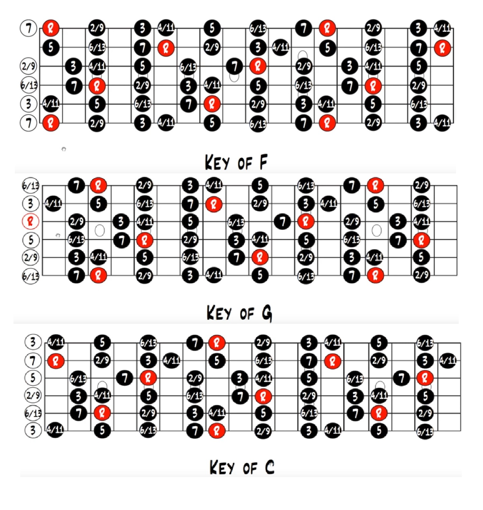
Major Scale Keys - Construction, Keys, Sharps & Flats
- Link to lesson.
- All the inharmonic equivalents are in grey. Inharmonic equivalents (also called enharmonic equivalents) are two notes, intervals, or chords that sound the same but are written differently in musical notation.
- So the question we are trying to answer here is that suppose you were constructing a major scale for the A♯-B♯... progression. Then would you name the scale A♯-B♯... or would you name it B♭-C... progression? A♯-B♯... progression is not a good idea in this case because you have sharps on all the notes, and some of them even have double sharps which can get confusing. Because a Cdouble♯ would just be a D note. But now if you see B♭, then only two notes have flats. So you would choose the name of the scale to be the B♭ major scale and not the A♯ major scale.
- This is a general rule that you can follow across all the enharmonic notes. Select the ones with the least number of flats or sharps.
- For F♯ and G♭ you can use either of them since both have an equal number of flats and sharps.

- All the inharmonic equivalents are in grey. Inharmonic equivalents (also called enharmonic equivalents) are two notes, intervals, or chords that sound the same but are written differently in musical notation.
- So the question we are trying to answer here is that suppose you were constructing a major scale for the A♯-B♯... progression. Then would you name the scale A♯-B♯... or would you name it B♭-C... progression? A♯-B♯... progression is not a good idea in this case because you have sharps on all the notes, and some of them even have double sharps which can get confusing. Because a Cdouble♯ would just be a D note. But now if you see B♭, then only two notes have flats. So you would choose the name of the scale to be the B♭ major scale and not the A♯ major scale.
- This is a general rule that you can follow across all the enharmonic notes. Select the ones with the least number of flats or sharps.
- For F♯ and G♭ you can use either of them since both have an equal number of flats and sharps.
Show Image
Major Scale Keys - How to find Sharps and Flats
- Link to lesson.
- The question that we are trying to answer here is this: by now we know that the way to build a major scale is to take a note and then putting it in-order along the musical alphabet. For example, if we take the A note, all we do is go A, B, C, D, E, F, G, A. Now we just need to find out where the sharps or the flats lie in this key. And that is what we are going to figure out.
- One way would be to just look at the chart in the previous section. But eventually you would want to memorize it, in which case you want to know how to figure it out.
- Refer to the chart in the previous section. First we need to understand what a sharp key is. It means a key that has at least one note that has a sharp in it. It doesn't mean that the key has to start with a sharp. For instance, G scale a sharp note, F♯ in it. Hence, it is a sharp key.
- We are going to simplify the chart to the below chart.
- The notes are arranged in the order of the number of sharp notes that the sharp keys has. C has none. G has one. D has 2. And so on.
- Go to the 5th note of C, which is G. That will be the next key which will have one more sharp in it than the previous one, in this case which will be 1 sharp, since C did not have a single one. And the place that the sharp lands will be the last note of the key, which in this case will be the F♯.
- Same thing again. We start at G and then go to the 5th note, which is now the D. So the next key becomes D. We add a sharp to the last note of the key, which gives us C♯. In addition to that, we keep the last sharps from the previous note. Hence, in this case, we retain the sharp from G, and F♯ is retained.
- Then we do the same thing with the flat keys.
- We again start with the C key since it has no flats.
- This time, instead of going to the 5th note, we go to the 4th note, which is the F note. F becomes our new next key and will have one more flat note compared to the earlier one. Hence, it will have one flat note. And instead of adding that flat note on the last key, we will add that to the 4th note instead. Hence, in the F key, it is the B♭ note.
- Repeating the same process again, the next key becomes B♭. We add a flat to the 4th note, which becomes E♭.
- The question that we are trying to answer here is this: by now we know that the way to build a major scale is to take a note and then putting it in-order along the musical alphabet. For example, if we take the A note, all we do is go A, B, C, D, E, F, G, A. Now we just need to find out where the sharps or the flats lie in this key. And that is what we are going to figure out.
- One way would be to just look at the chart in the previous section. But eventually you would want to memorize it, in which case you want to know how to figure it out.
- Refer to the chart in the previous section. First we need to understand what a sharp key is. It means a key that has at least one note that has a sharp in it. It doesn't mean that the key has to start with a sharp. For instance, G scale a sharp note, F♯ in it. Hence, it is a sharp key.
- We are going to simplify the chart to the below chart.
Show Image
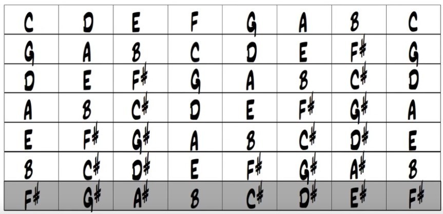
- Go to the 5th note of C, which is G. That will be the next key which will have one more sharp in it than the previous one, in this case which will be 1 sharp, since C did not have a single one. And the place that the sharp lands will be the last note of the key, which in this case will be the F♯.
- Same thing again. We start at G and then go to the 5th note, which is now the D. So the next key becomes D. We add a sharp to the last note of the key, which gives us C♯. In addition to that, we keep the last sharps from the previous note. Hence, in this case, we retain the sharp from G, and F♯ is retained.
- Then we do the same thing with the flat keys.
- We again start with the C key since it has no flats.
- This time, instead of going to the 5th note, we go to the 4th note, which is the F note. F becomes our new next key and will have one more flat note compared to the earlier one. Hence, it will have one flat note. And instead of adding that flat note on the last key, we will add that to the 4th note instead. Hence, in the F key, it is the B♭ note.
- Repeating the same process again, the next key becomes B♭. We add a flat to the 4th note, which becomes E♭.
Show Image
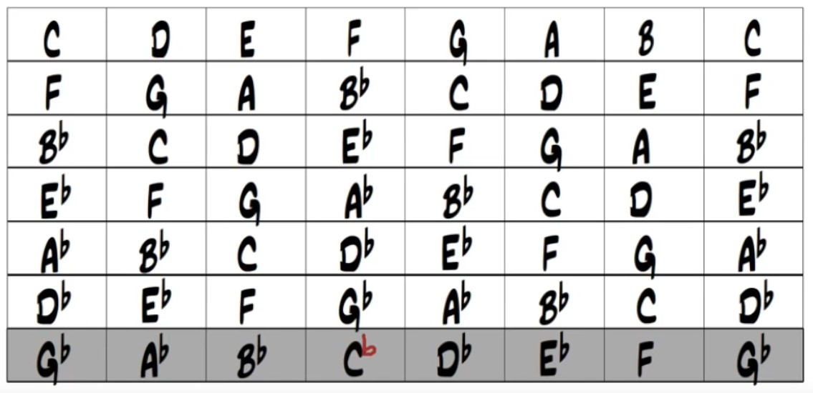
Chapter 4: Chords
Major Triads